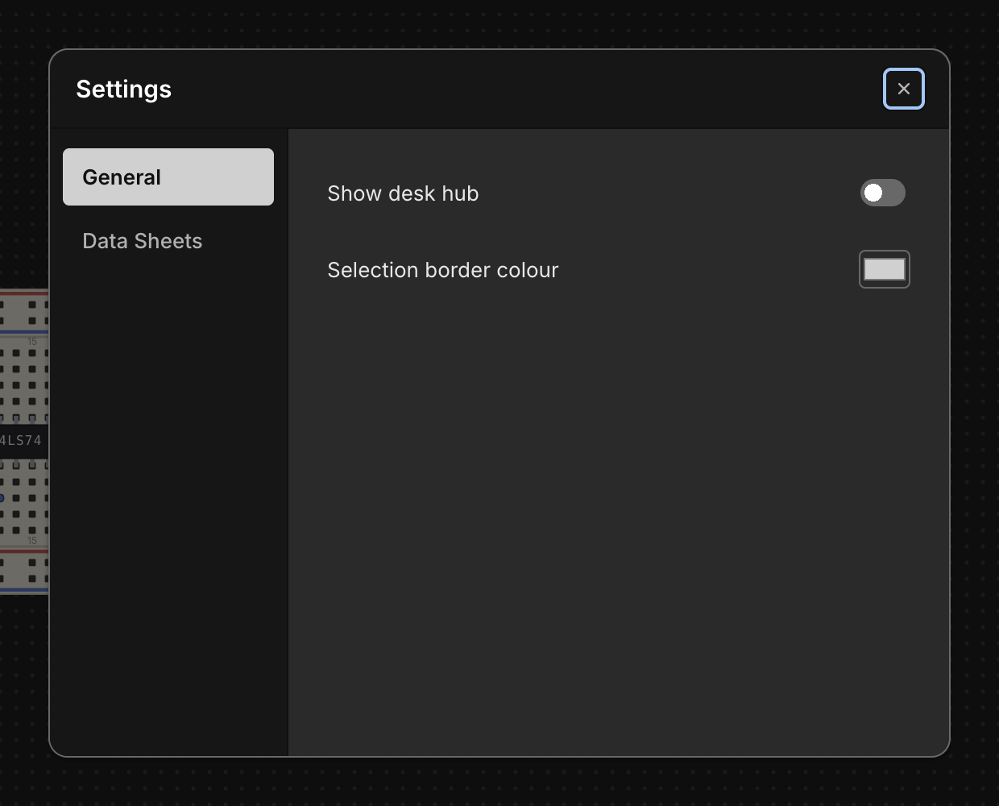

Settings
Chip Hippo keeps its handful of app-wide preferences in one small Settings dialog — a tabbed master-detail card with a left nav rail and a panel on the right. It's deliberately minimal: two tabs, a couple of controls each, applied live the moment you change them.

Opening Settings
Open the dialog with Cmd/Ctrl+,, or click the gear icon in the top-right
corner of the header. Both routes lead to the same dialog seeded with your
current settings, so it doesn't matter which you use.
General
The General tab holds two controls:
- Show desk hub — off by default. This toggles a debug overlay (the
DeskHud) on the desk; most users can leave it off. - Selection border colour — a
#rrggbbcolour picker for the outline drawn around whatever's selected on the desk. Leave it unset to use the theme's default accent colour instead of a custom one.
Both take effect immediately — there's no separate Apply or OK step.
Data Sheets
The Data Sheets tab points Chip Hippo at an external folder of manufacturer datasheet PDFs on your machine. Click Browse… to pick a folder with the native file picker; the chosen path is shown next to it, with a trash-can button to clear it back to no folder selected.
Name the PDFs in that folder after each chip's catalog reference (for
example 74LS00.pdf). When a chip's file is found there, its
pin-assignments window grows a button that opens the PDF
in your system's default viewer. This is separate from the small datasheet
crop the pinout window already shows for most chips — the external folder is
for the full manufacturer document, not the built-in crop.
What else persists automatically
A few things aren't part of this dialog but are remembered between sessions without any action on your part: the app window's position and size, and the desk camera — your current pan position and zoom level. Close Chip Hippo and reopen it, and you're back exactly where you left off.
See Files, Autosave & Undo for how your circuit itself is saved.